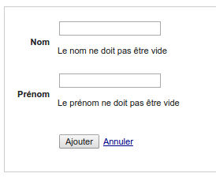

Episode 4: Builder: formulaire d'ajout
I. Introduction
Lors du précédent épisode, nous avons générer un module CRUD pour notre table auteur.Nous allons détailler ici la partie formulaire d'ajout.
II. L'action new du module auteurs
Lorsque l'on cliquer sur le lien "new" de notre module précédement généré, on arrive sur le module "auteurs", et l'action "new"Editer le fichier module/auteur/main.php, regardons la méthode _new()
public function _new(){
$tMessage=$this->processSave();
$oAuteur=new row_auteur;
$oView=new _view('auteurs::new');
$oView->oAuteur=$oAuteur;
$oPluginXsrf=new plugin_xsrf();
$oView->token=$oPluginXsrf->getToken();
$oView->tMessage=$tMessage;
$this->oLayout->add('main',$oView);
}
On instancie un objet $oAuteur à partir de la classe row_auteur.
Ensuite comme d'habitude nous créons un objet view à partir de notre vue "auteurs::new) (fichier module/auteur/view.new.php)
Puis on lui assigne l'objet $oAuteur précédement créé.
Nous instancions ensuite le plugin plugin_xsrf, que nous utilisons pour assigner un token à notre vue.
Nous assignons le tableau $tMessage récupéré à la première ligne.
Et enfin nous envoyons notre vue enrichier à notre layout (à l'emplacement principal "main")
III. Zoom sur notre vue new
Nous avons vu que nous instancions la vue auteurs::new
<?php
$oForm=new plugin_form($this->oAuteur);
$oForm->setMessage($this->tMessage);
?>
<form action="" method="POST" >
<table class="tb_new">
<tr>
<th>Nom</th>
<td><?php echo $oForm->getInputText('nom')?></td>
</tr>
<tr>
<th>Prénom</th>
<td><?php echo $oForm->getInputText('prenom')?></td>
</tr>
<tr>
<th></th>
<td>
<p>
<input type="submit" value="Ajouter" /> <a href="<?php echo $this->getLink('auteurs::list')?>">Annuler</a>
</p>
</td>
</tr>
</table>
<?php echo $oForm->getToken('token',$this->token)?>
</form>
Nous voyons également la création d'un objet plugin_form, utilisé ensuite pour construire nos différents champs de formulaire.
Exemple:
<td><?php echo $oForm->getInputText('nom')?></td>
<a href="<?php echo $this->getLink('auteurs::list')?>">Annuler</a>
<?php echo $oForm->getToken('token',$this->token)?>
Il nous reste une chose à voir: ce fameux tableau $tMessage récupéré dans le module, assigné à la vue pour etre passée à l'objet plugin_form.
IV. tableau $tMessage et la méthode processSave()
Dans le module, nous avons vu en amont de l'action _new()
public function _new(){
$tMessage=$this->processSave();
private function processSave(){
if(!_root::getRequest()->isPost() ){ //si ce n'est pas une requete POST on ne soumet pas
return null;
}
$oPluginXsrf=new plugin_xsrf();
if(!$oPluginXsrf->checkToken( _root::getParam('token') ) ){ //on verifie que le token est valide
return array('token'=>$oPluginXsrf->getMessage() );
}
$iId=_root::getParam('id',null);
if($iId==null){
$oAuteur=new row_auteur;
}else{
$oAuteur=model_auteur::getInstance()->findById( _root::getParam('id',null) );
}
$tColumn=array('nom','prenom');
foreach($tColumn as $sColumn){
$oAuteur->$sColumn=_root::getParam($sColumn,null) ;
}
if($oAuteur->save()){
//une fois enregistre on redirige (vers la page liste)
_root::redirect('auteurs::list');
}else{
return $oAuteur->getListError();
}
}
Ensuite, on instancie l'objet plugin_xsrf pour vérifier que le jeton est valide*.
* la page de spécialisé sur la sécurité
On récupère l'id de l'auteur: si il est vidé, on est dans le cas d'un ajout, sinon on est dans le cadre d'une modification.
Dans notre cas présent de l'action _new(), on a l'id non renseigné (premier cas)
$iId=_root::getParam('id',null);
if($iId==null){
$oAuteur=new row_auteur;
}else{
Puis on boucle sur les champs du formulaire pour les renseigner sur l'objet à partir des paramètres soumis via le formulaire.
$tColumn=array('nom','prenom');
foreach($tColumn as $sColumn){
$oAuteur->$sColumn=_root::getParam($sColumn,null) ;
}
if($oAuteur->save()){
//une fois enregistre on redirige (vers la page liste)
_root::redirect('auteurs::list');
Sinon
}else{
return $oAuteur->getListError();
}
Qui pour rappel était récupéré dans notre méthode _new() dans un tableau $tMessage
public function _new(){
$tMessage=$this->processSave();
$oView->tMessage=$tMessage;
<?php
$oForm=new plugin_form($this->oAuteur);
$oForm->setMessage($this->tMessage);
V. Gestion d'enregistrement: ajout de contraintes
Actuellement, on peut ajouter un auteur sans nom ni prénom ce qui n'est pas cohérentNous allons ajouter une contrainte pour obliger à renseigner un nom et prénom.
Editez le fichier model model/model_auteur.php
Regardons la class row_auteur
class row_auteur extends abstract_row{
protected $sClassModel='model_auteur';
/*exemple jointure
public function findAuteur(){
return model_auteur::getInstance()->findById($this->auteur_id);
}
*/
/*exemple test validation*/
private function getCheck(){
$oPluginValid=new plugin_valid($this->getTab());
/* renseigner vos check ici
$oPluginValid->isEqual('champ','valeurB','Le champ n\est pas égal à '.$valeurB);
$oPluginValid->isNotEqual('champ','valeurB','Le champ est égal à '.$valeurB);
$oPluginValid->isUpperThan('champ','valeurB','Le champ n\est pas supé à '.$valeurB);
$oPluginValid->isUpperOrEqualThan('champ','valeurB','Le champ n\est pas supé ou égal à '.$valeurB);
$oPluginValid->isLowerThan('champ','valeurB','Le champ n\est pas inférieur à '.$valeurB);
$oPluginValid->isLowerOrEqualThan('champ','valeurB','Le champ n\est pas inférieur ou égal à '.$valeurB);
$oPluginValid->isEmpty('champ','Le champ n\'est pas vide');
$oPluginValid->isNotEmpty('champ','Le champ ne doit pas être vide');
$oPluginValid->isEmailValid('champ','L\email est invalide');
$oPluginValid->matchExpression('champ','/[0-9]/','Le champ n\'est pas au bon format');
$oPluginValid->notMatchExpression('champ','/[a-zA-Z]/','Le champ ne doit pas être a ce format');
*/
return $oPluginValid;
}
public function isValid(){
return $this->getCheck()->isValid();
}
public function getListError(){
return $this->getCheck()->getListError();
}
public function save(){
if(!$this->isValid()){
return false;
}
parent::save();
return true;
}
}
public function isValid(){
return $this->getCheck()->isValid();
}
public function getListError(){
return $this->getCheck()->getListError();
}
public function save(){
if(!$this->isValid()){
return false;
}
parent::save();
return true;
}
if($oAuteur->save()){
//une fois enregistre on redirige (vers la page liste)
_root::redirect('auteurs::list');
}else{
return $oAuteur->getListError();
}
VI. Zoom sur la méthode getCheck()
private function getCheck(){
$oPluginValid=new plugin_valid($this->getTab());
/* renseigner vos check ici
$oPluginValid->isEqual('champ','valeurB','Le champ n\est pas égal à '.$valeurB);
$oPluginValid->isNotEqual('champ','valeurB','Le champ est égal à '.$valeurB);
$oPluginValid->isUpperThan('champ','valeurB','Le champ n\est pas supé à '.$valeurB);
$oPluginValid->isUpperOrEqualThan('champ','valeurB','Le champ n\est pas supé ou égal à '.$valeurB);
$oPluginValid->isLowerThan('champ','valeurB','Le champ n\est pas inférieur à '.$valeurB);
$oPluginValid->isLowerOrEqualThan('champ','valeurB','Le champ n\est pas inférieur ou égal à '.$valeurB);
$oPluginValid->isEmpty('champ','Le champ n\'est pas vide');
$oPluginValid->isNotEmpty('champ','Le champ ne doit pas être vide');
$oPluginValid->isEmailValid('champ','L\email est invalide');
$oPluginValid->matchExpression('champ','/[0-9]/','Le champ n\'est pas au bon format');
$oPluginValid->notMatchExpression('champ','/[a-zA-Z]/','Le champ ne doit pas être a ce format');
*/
return $oPluginValid;
}
private function getCheck(){
$oPluginValid=new plugin_valid($this->getTab());
$oPluginValid->isNotEmpty('nom','Le nom ne doit pas être vide');
$oPluginValid->isNotEmpty('prenom','Le prénom ne doit pas être vide');
return $oPluginValid;
}
En validant le formulaire vide, on voit ici les deux messages d'erreur:

Pour information, les contraintes étant ajoutée sur la classe modèle, toute action enregistrant via cette classe un auteur se devra de respectées cette méthode getCheck, que ce soit en web, webservice, ligne de commande...